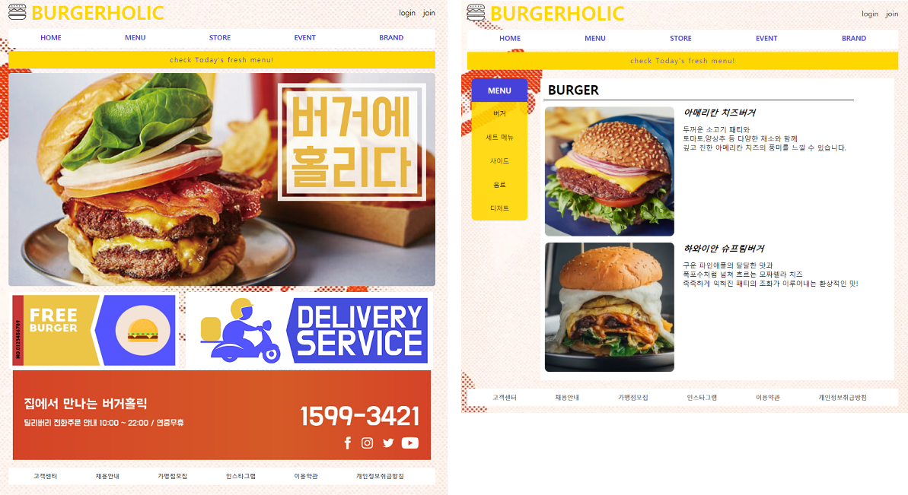

신입 개발자
Park Jeesonga
" 어제보다 더 나은 내가 되자 "
대학시절 우연히 경험 하게 되었던 개발 작업은 큰 매력으로 다가왔습니다.
유튜브 등 온라인 매체를 통해 개발에 대한 관심을 이어갔고
6개월의 단기 국비 과정을 통해 본격적으로 입문하였습니다.
처음에는 어려움도 많았지만, 한 번 시작한 일은 끝을 보는 타입이라
지금까지 학습을 이어오며 개발자로 꾸준히 성장 해 나가고 있습니다.
언제나 현 상황에 안주하지 않고 노력하여 변화하고 발전하는 삶을 살아가려 합니다.
# Front-End
HTML
웹 표준을 준수하여 레이아웃을 구성하고
웹 문서를 작성 할 수 있습니다.
CSS
CSS의 구성과 기본 사용법을 익혀
적재 적소에 사용 할 수 있습니다.
JAVASCRIPT
객체지향 스크립트에 대한 이해가 되어 있으며
ES6 문법을 사용 할 수 있습니다.
JQUERY
라이브러리를 사용하여 DOM 객체를 조작 할 수 있습니다.
Vue.js
Vue의 기초 개념을 이해하였고 템플릿 문법을 사용하여
CLI 프로젝트를 생성 할 수 있습니다.
# Back-End
SPRING
Spring Framework를 이용하여 CRUD를 사용한
웹 서비스를 구축 할 수 있습니다.
ORACLE
관계형 데이터베이스를 이해하고 SQL을 습득 하였으며
CRUD 및 PL/SQL을 이용 할 수 있습니다.
MyBatis
Mybatis ORM을 이용한 개발 환경 구축이 가능하며
Spring Framework 와 연동 할 수 있습니다.
MySQL
CRUD 작업을 포함한 기초 명령문 및 주요 함수를
사용 할 수 있습니다.
JAVA
객체지향적 사고를 이해하고 JAVA 문법을 사용하며
각 역할별로 클래스를 분리 할 수 있습니다.
NODE.JS
Express Module을 이용하여 웹 서버를 구축 할 수 있고
여러 데이터베이스와 연동 할 수 있습니다.
MONGO DB
NoSQL의 MongoDB를 이용하여 json 데이터를 입출력 할 수 있습니다.
# Dev-ops
LINUX
기본 명령어를 사용 할 수 있으며 웹 서버를 구성 할 수 있습니다.
GIT
버전 관리가 가능합니다. 원격 저장소에서 repository 를 생성하고 로컬 git 저장소에서 clone, commit 할 수 있습니다.
Mamp Connect
기업 내 사무전산 포탈, 그룹웨어 시스템

프로젝트 소개
현재의 기업 환경에 기본적으로 필요한 기능을 중심으로 직관적이고 간편한 사무 시스템을 구현
주요 SKILL
SEJONG STEAK
패밀리 레스토랑 이용 및 예약 홈페이지

프로젝트 소개
패밀리 레스토랑 고객을 위한 회원 시스템이 구축 되어 있고, 이를 바탕으로 다양한 서비스를 이용 할 수 있는 홈페이지
주요 SKILL
BurgerHolic
정보성 패스트푸드 운영 홈페이지
작업 소개
기본적인 HTML과 CSS 문법을 사용하여 만든 햄버거 가게의 홈페이지
주요 SKILL
BARCODE-RECYCLE
바코드 인식 분리수거 프로그램

작업 소개
재활용 쓰레기의 바코드를 이용하여 올바른 분리수거를 유도하는 프로그램
주요 SKILL
LIBRARY
도서관 대여 프로그램
작업 소개
기초 JAVA 문법을 사용하여 도서관 운영 프로그램 생성
주요 SKILL
SHOPPING
쇼핑몰 프로그램
작업 소개
기초 JAVA 문법을 이용하여 간단한 쇼핑몰 프로그램 구성
주요 SKILL